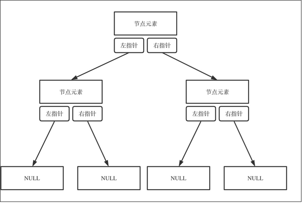
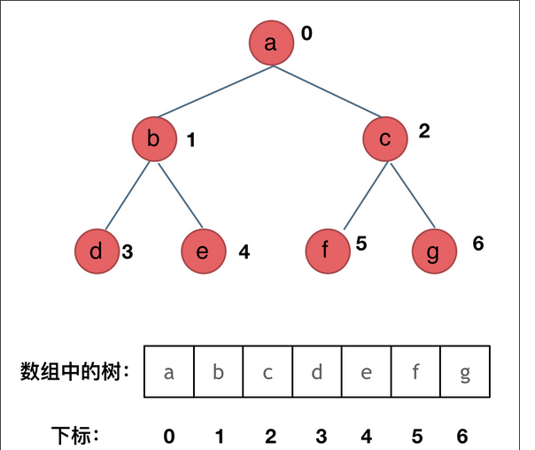

算法学习
1. 算法学习
1.1. 二叉树
1.1.1. 二叉树理论基础
- 种类
- 满二叉树
- 完全二叉树
- 二叉搜索树
二叉搜索树是一颗有序树
- 若左子树不空，则左子树上的所有节点的值均小于他根节点的值
- 若右子树不空，则右子树上的所有节点的值均大于他根节点的值
- 他的左、右子树也为二叉搜索树

- 平衡二叉搜索树
- 存储方式
- 链式存储 指针 
- 顺序存储 数组

- 使用数组存储二叉树 如果父节点的数组下标为 i,那么他的左孩子为 i*2+1,右孩子为 i*2+2
- 遍历方式
- 深度优先遍历 先往深走，遇到叶子节点再往回走
- 前序遍历（递归法，迭代法）
- 中序遍历
- 后序遍历
- 广度有限遍历 一层一层的去遍历
- 层次遍历 (迭代法)
- 前中后指的是中间节点的遍历顺序
- 栈是递归的一种实现结构
- 广度优先遍历一般使用队列实现
- 深度优先遍历 先往深走，遇到叶子节点再往回走
定义
function TreeNode(val, left, right) { this.val = val === undefined ? 0 : val; this.left = left === undefined ? null : left; this.right = right === undefined ? null : right; }
struct TreeNode { int val; TreeNode *left; TreeNode *right; TreeNode(int x) : val(x), left(NULL), right(NULL) {} };
1.1.2. 二叉树的递归遍历
- 递归三要素
- 确定递归函数的参数与返回值 : 确定哪些参数是递归的过程中需要处理的，那么就在递归函数里加上这个参数， 并且还要明确每次递归的返回值是什么进而确定递归函数的返回类型。
- 确定终止条件: 写完了递归算法, 运行的时候，经常会遇到栈溢出的错误，就是没写终止条件或者终止条件写的不对，操作系统也是用一个栈的结构来保存每一层递归的信息，如果递归没有终止，操作系统的内存栈必然就会溢出。
- 确定单层递归的逻辑: 确定每一层递归需要处理的信息。在这里也就会重复调用自己来实现递归的过程。
- 以 前序遍历为例
递归函数的参数与返回值
function preOrderTraveral(root) {}
终止条件
function preOrderTraveral(root) { if (!root) { return; } }
单层递归的逻辑
function preOrderTraveral(root) { if (!root) { return; } console.log(root.val); preOrderTraveral(root.left) preOrderTraveral(root.right) }
1.1.3. 二叉树的迭代遍历
递归的实现就是：每一次递归调用都会把函数的局部变量、参数值和返回地址等压入调用栈中 ，然后递归返回的时候，从栈顶弹出上一次递归的各项参数，所以这就是递归为什么可以返回上一层位置的原因。
{kind=link}
- 前序遍历 中左右，所以加入栈的顺序是先看右边节点，再看左边节点
- 先把根节点放入栈中
- 然后检查栈中是否含有元素
- 弹出栈中元素，并加入到结果数组中
- 检查弹出元素右节点是否存在，加入栈中
- 检查弹出元素左节点是否存在，加入栈中
- 返回 2
var preorderTraversal = function (root) { if (!root) { return; } let stack = [], res = []; stack.push(root); while (stack.length > 0) { let node = stack.pop(); res.push(node.val); if (node.right) { stack.push(node.right); } if (node.left) { stack.push(node.left); } } return res; };
- 中序遍历
- 使用栈处理节点的元素，指针遍历访问节点
- 判断当前节点为空 或者栈是否为空
- 循环向左子树遍历，把最左边的节点加入栈中
- 当没有左节点时，弹出栈顶元素放到结果数组中，再把当前弹出节点的右子树压入栈中（如果存在）
- 返回 2
let inorderTraversal = function (head) { if (!head) { return; } let stack = [], res = [], cur = head; while (stack.length > 0 || cur) { while (cur) { stack.push(cur); cur = cur.left; } let node = stack.pop(); res.push(node.val); if (node.right) { cur = node.right; } } return res; };
- 后序遍历 是先序遍历结果的反转，即只需要将先序的结果逆转为新的即可
- 这里使用
stack2来保存先序的结果 - 将
stack2中的元素一个一个从栈顶弹出给res结果数组即可
- 这里使用
let postorderTraversal = function (head) { if (!head) { return; } let stack1 = [], stack2 = [], res = []; stack1.push(head); while (stack1.length > 0) { let node = stack1.pop(); stack2.push(node); if (node.left) { stack1.push(node.left); } if (node.right) { stack1.push(node.right); } } while (stack2.length > 0) { res.push(stack2.pop().val); } return res; };
1.1.4. 二叉树的统一迭代法
迭代实现的先中后序，风格并不统一，除了先序和后序有关联，中序完全是另外一个风格
中序遍历中使用栈的话，~无法同时解决访问节点（遍历节点）和处理节点（将元素放到结果数组）不一致的情况~
所以我们就将访问的节点放入栈中，把要处理的节点也放入栈中但是加以标记
如何标记：~就是要处理的节点放入栈后，紧接着放入一个空指针作为标记~ 这种方法称为 标记法
迭代法中序遍历- 这里将访问的节点直接加入栈中
但如果是处理的节点则后面放入一个空节点，这样只有空节点弹出的时候，才将下一个节点放入结果集合
var inorderTraversal = function (root) { const stack = [], res = []; if (root) { stack.push(root); } while (stack.length) { const node = stack.pop(); if (!node) { res.push(stack.pop().val); continue; } node.right && stack.push(node.right); stack.push(node); stack.push(null); node.left && stack.push(node.left); } return res; };
迭代法前序遍历可以看出这里只与中序遍历更改两两行代码的顺序
var preorderTraversal = function (root) { const stack = [], res = []; if (root) { stack.push(root); } while (stack.length) { const node = stack.pop(); if (!node) { res.push(stack.pop().val); continue; } node.right && stack.push(node.right); node.left && stack.push(node.left); stack.push(node); stack.push(null); } return res; };
迭代法后序遍历- 这里与中序遍历相比，也是只改变了两行代码顺序
var postorderTraversal = function (root) { const stack = [], res = []; if (root) { stack.push(root); } while (stack.length) { const node = stack.pop(); if (!node) { res.push(stack.pop().val); continue; } stack.push(node); stack.push(null); node.right && stack.push(node.right); node.left && stack.push(node.left); } return res; };
1.1.5. 二叉树的层序遍历
层序遍历 遍历一个二叉树，就是从左到右一层一层的去遍历二叉树。
这里需要借助一个辅助数据结构即队列， 队列先进先出，符合一层一层遍历的逻辑，而是用栈先进后出适合模拟深度优先遍历也就是递归的逻辑
而这种层序遍历方式就是图论中的广度优先遍历
二叉树的层序遍历，从上往下
var levelOrder = function (root) { let res = [], queue = []; queue.push(root); if (!root) { return res; } while (queue.length > 0) { let length = queue.length; let curLevel = []; for (let i = 0; i < length; i++) { let node = queue.shift(); curLevel.push(node.val); node.left && queue.push(node.left); node.right && queue.push(node.right); } res.push(curLevel); } return res; };
二叉树的层序遍历，从下往上
var levelOrderBottom = function (root) { if (!root) { return []; } let res = [], queue = []; queue.push(root); while (queue.length > 0) { let len = queue.length; let curLevel = []; for (let i = 0; i < len; i++) { let node = queue.shift(); curLevel.push(node.val); node.left && queue.push(node.left); node.right && queue.push(node.right); } res.push(curLevel); } return res.reverse(); };
-
var rightSideView = function (root) { if (!root) { return []; } let res = [], queue = []; queue.push(root); while (queue.length > 0) { let len = queue.length; while (len--) { let node = queue.shift(); if (!len) { res.push(node.val); } node.left && queue.push(node.left); node.right && queue.push(node.right); } } return res; };
-
var averageOfLevels = function (root) { if (!root) { return []; } let res = [], queue = []; queue.push(root); while (queue.length > 0) { let len = queue.length; let sum = 0; for (let i = 0; i < len; i++) { let node = queue.shift(); sum += node.val; node.left && queue.push(node.left); node.right && queue.push(node.right); } res.push(sum / len); } return res; };
-
var levelOrder = function (root) { if (!root) { return []; } let res = [], queue = []; queue.push(root); while (queue.length > 0) { let len = queue.length; let curLevel = []; while (len--) { let node = queue.shift(); curLevel.push(node.val); node.children.map((item) => item && queue.push(item)); } res.push(curLevel); } return res; };
-
var largestValues = function (root) { if (!root) { return []; } let res = [], queue = []; queue.push(root); while (queue.length > 0) { let len = queue.length; let max = Number.MIN_SAFE_INTEGER; while (len--) { let node = queue.shift(); max = Math.max(max, node.val); node.left && queue.push(node.left); node.right && queue.push(node.right); } res.push(max); } return res; };
-
var connect = function (root) { if (!root) { return root; } let queue = []; queue.push(root); while (queue.length > 0) { let len = queue.length; let max = Number.MIN_SAFE_INTEGER; while (len--) { let node = queue.shift(); node.left && queue.push(node.left); node.right && queue.push(node.right); if (len === 0) { break; } else { node.next = queue[0]; } } } return root; };
-
var connect = function (root) { if (!root) { return root; } let queue = []; queue.push(root); while (queue.length > 0) { let len = queue.length; let max = Number.MIN_SAFE_INTEGER; while (len--) { let node = queue.shift(); node.left && queue.push(node.left); node.right && queue.push(node.right); if (len === 0) { break; } else { node.next = queue[0]; } } } return root; };
-
var maxDepth = function (root) { if (!root) { return 0; } let queue = [], depth = 0; queue.push(root); while (queue.length > 0) { let len = queue.length; while (len--) { let node = queue.shift(); node.left && queue.push(node.left); node.right && queue.push(node.right); } depth++; } return depth; };
-
var minDepth = function (root) { if (!root) { return 0; } let queue = [], depth = 0; queue.push(root); while (queue.length > 0) { let len = queue.length; depth++; while (len--) { let node = queue.shift(); if (!node.left && !node.right) { return depth; } node.left && queue.push(node.left); node.right && queue.push(node.right); } } return depth; };
总结二叉树的层序遍历，就是图论中的广度优先搜索在二叉树中的应用，需要借助队列来实现
1.1.6. 翻转二叉树
想要反转一颗二叉树，只需要把每一个节点的左右孩子交换一下即可
在遍历的过程中去翻转每一个节点的左右孩子就可以达到整体翻转的效果
使用前序遍历和后序遍历都可以，唯独中序遍历不方便，因为中序遍历会把某些节点的左右孩子翻转两次，使用层序遍历也是可以的
- 递归法
使用前序遍历
var invertTree = function (root) { if (!root) { return root; } let preorderInvertTree = function (root) { if (!root) { return root; } [root.left, root.right] = [root.right, root.left]; arguments.callee(root.left); arguments.callee(root.right); return root; }; return preorderInvertTree(root); };
使用层序遍历
var invertTree = function (root) { if (!root) { return root; } let queue = []; queue.push(root); while (queue.length > 0) { let len = queue.length; while (len--) { let node = queue.shift(); [node.left, node.right] = [node.right, node.left]; node.left && queue.push(node.left); node.right && queue.push(node.right); } } return root; };
1.1.7. 二叉树总结
二叉树节点 js 定义
function TreeNode(val, left, right) { this.val = (var === undefined ? 0 : val); this.left= (lef t=== undefined ? null : left); this.right = (right === undefined ? null: right); }
- 二叉搜索书的 js 实现
1.1.8. 对称二叉树
给定一个二叉树，检查他是否是镜像对称的
递归法
- 显然根节点为空时，这是一颗对称的二叉树
- 递归函数的参数即为当前节点的左右节点
- 如果
left为空right不为空，则返回false - 如果
left不为空right为空，则返回false - 如果
left为空right为空，则返回true - 如果
left.val !== right.val，则返回false - 最后的情况是
left, right都不为空且数值相等的时候- 这里我们需要比较二叉树的外侧是否对称，需要传入
left的左孩子，~right~ 的右孩子 - 这里我们需要比较二叉树的内侧是否对称，需要传入
left的右孩子，~right~ 的左孩子 - 只有外侧与内侧同时对称才返回
true否则返回false
- 这里我们需要比较二叉树的外侧是否对称，需要传入
- 如果
var isSymmetric = function (root) { let isSymmetricRecursive = (root) => { if (!root) { return true; } let compare = (left, right) => { if (!left && right) { return false; } else if (left && !right) { return false; } else if (!left && !right) { return true; } else if (left.val !== right.val) { return false; } let outside = compare(left.left, right.right); let inside = compare(left.right, right.left); let isSame = outside && inside; return isSame; }; return compare(root.left, root.right); }; return isSymmetricRecursive(root); };
迭代法
- 显然根节点为空时，这是一颗对称的二叉树
- 当根节点不为空时，把当前节点的左右节点都先后进入队列
queue- 遍历这个队列，从
left, right先后出列 - 如果
left, right都为空，说明是对称的 - 如果
left, right只有一个为空，或者二者的值不等，说明不是对称的，直接返回false - 将
left.left, right.right入队列 - 将
left.right, right.left如队列 - 继续遍历
queue
- 遍历这个队列，从
let isSymmetricTraversal = (root) => { if (!root) { return true; } let queue = []; queue.push(root.left); queue.push(root.right); while (queue.length > 0) { let left = queue.shift(), right = queue.shift(); if (!left && !right) { continue; } if (!left || !right || left.val !== right.val) { return false; } queue.push(left.left); queue.push(right.right); queue.push(left.right); queue.push(right.left); } return true; };
- 相关题目
- 100-相同的树
- 这里使用了同时遍历两棵树
p,q 判断每一个节点是否相等 这里使用队列保存每次遍历的节点
nodeP, nodeQ- 如果一空一非空 则直接返回
false - 如果两个都是空 则继续遍历
- 遍历到结束，说面两棵树完全相同，返回
true
var isSameTree = function (p, q) { if (!q && !p) { return true; } else if ((!q && p) || (q && !p) || p.val !== q.val) { return false; } else { let queue = []; queue.push(p, q); while (queue.length > 0) { let nodeP = queue.shift(), nodeQ = queue.shift(); if (!nodeP && !nodeQ) { continue; } if (!nodeP || !nodeQ || nodeP.val !== nodeQ.val) { return false; } queue.push(nodeP.left); queue.push(nodeQ.left); queue.push(nodeP.right); queue.push(nodeQ.right); } return true; } };
- 如果一空一非空 则直接返回
- 这里使用了同时遍历两棵树
-
- 先找到另一颗子树根节点在此树的位置
- 在从这两个节点比较两颗树是否完全相同
- 如果不等就继续遍历寻找相等的子节点
var isSubtree = function (root, subRoot) { var isSameTree = function (p, q) { if (!q && !p) { return true; } else if ((!q && p) || (q && !p) || p.val !== q.val) { return false; } else { let queue = []; queue.push(p, q); while (queue.length > 0) { let nodeP = queue.shift(), nodeQ = queue.shift(); if (!nodeP && !nodeQ) { continue; } if (!nodeP || !nodeQ || nodeP.val !== nodeQ.val) { return false; } queue.push(nodeP.left); queue.push(nodeQ.left); queue.push(nodeP.right); queue.push(nodeQ.right); } return true; } }; let traversal = function (head, subRoot) { if (!head) { return; } let stack = []; stack.push(head); while (stack.length > 0) { let node = stack.pop(); if (node.val === subRoot.val) { if (isSameTree(node, subRoot)) { return true; } } if (node.right) { stack.push(node.right); } if (node.left) { stack.push(node.left); } } return false; }; return traversal(root, subRoot); };
- 100-相同的树
1.1.9. 二叉树的最大深度
递归法
- 当前节点为空时，返回 0
- 否则返回 1+当前节点左右子树高度相对大的那一个
- 这里使用前序遍历，后序遍历都可
let maxDepthRecursive = (root) => { if (!root) { return 0; } return ( 1 + Math.max(arguments.callee(root.left), arguments.callee(root.right)) ); };
迭代法
- 这里使用的时层序遍历
- 每访问一层，
depth++
let maxDepthTraversal = (root) => { if (!root) { return 0; } let queue = [], depth = 0; queue.push(root); while (queue.length > 0) { let len = queue.length; while (len--) { let node = queue.shift(); node.left && queue.push(node.left); node.right && queue.push(node.right); } depth++; } return depth; };
1.1.10. 二叉树的最小深度
- 递归法
递归法需要注意的是 当
root只有左子树或者右子树时，此时最小深度不是 1
let minDepthRecusive = function (root) { if (!root) { return 0; } let leftDepth = arguments.callee(root.left), rightDepth = arguments.callee(root.right); if (!root.left && root.right) { return 1 + rightDepth; } if (root.left && !root.right) { return 1 + leftDepth; } return 1 + Math.min(leftDepth, rightDepth); };
- 迭代法
这里使用的是层序遍历，当找到一个节点没有左右子节点即退出
let minDepthTraversal = (root) => { if (!root) { return 0; } let queue = [], depth = 0; queue.push(root); while (queue.length > 0) { let len = queue.length; depth++; while (len--) { let node = queue.shift(); if (!node.left && !node.right) { return depth; } node.left && queue.push(node.left); node.right && queue.push(node.right); } } return depth; };
- 迭代法
1.1.11. 完全二叉树的节点个数
递归按照普通二叉树的层序遍历
var countNode = function (root) { if (!root) { return 0; } return 1 + arguments.callee(root.left) + arguments.callee(root.right); };
迭代按照普通二叉树的层序遍历
var countNodes = function (root) { if (!root) { return 0; } let count = 0, queue = []; queue.push(root); while (queue.length > 0) { let len = queue.length; while (len--) { let node = queue.pop(); count++; node.left && queue.push(node.left); node.right && queue.push(node.right); } } return count; };
利用完全二叉树性质
var countNodes = function (root) { if (!root) { return 0; } let left = root.left, right = root.right, leftHeight = 0, rightHeight = 0; while (left) { left = left.left; leftHeight++; } while (right) { right = right.right; rightHeight++; } if (leftHeight === rightHeight) { return Math.pow(2, leftHeight + 1) - 1; } return countNodes(root.left) + countNodes(root.right) + 1; };
1.1.12. 平衡二叉树
一棵高度平衡二叉树定义为：一个二叉树每个节点 的左右两个子树的高度差的绝对值不超过 1
- 二叉树节点的深度：指从根节点到该节点的最长简单路径边的条数
- 二叉树节点的高度：指从该节点到叶子节点的最长简单路径边的条数
1.1.13. 二叉树的所有路径
递归法
- 递归函数的参数与返回值
- 当前节点
node - 当前路径
curPath
- 当前节点
- 确定递归终止条件
- 当前节点的左右节点都为
null
- 当前节点的左右节点都为
- 确定单层递归条件
let binaryTreePathsTraversal = function (root) { let res = []; const getPath = function (node, curPath) { if (!node.left && !node.right) { curPath += node.val; res.push(curPath); return; } curPath += node.val + "->"; node.left && arguments.callee(node.left, curPath); node.right && arguments.callee(node.right, curPath); }; getPath(root, ""); return res; };
- 递归函数的参数与返回值
迭代法
let binaryTreePathsTraversal = function (root) { let res = []; const getPath = function (node, curPath) { if (!node.left && !node.right) { curPath += node.val; res.push(curPath); return; } curPath += node.val + "->"; node.left && arguments.callee(node.left, curPath); node.right && arguments.callee(node.right, curPath); }; getPath(root, ""); return res; };
1.1.14. 二叉树周末总结
- 对称二叉树
1.2. 回溯算法
1.2.1. 理论基础
- 回溯算法 也叫做回溯搜索法，是一种搜索的方式，递归是回溯的副产品，只要有递归就会有回溯
- 效率 回溯的本质是穷举，穷举所有可能，然后选出我们想要的答案，如果想让回溯高效一点，可以加一些剪枝的操作，但改变不了回溯法就是穷举法的本质
- 回溯法解决的问题
- 组合问题： N 个数里面按一定规则找出 k 个数的集合
- 切割问题：一个字符串按一定规则有几种切割方式
- 子集问题：一个 N 个数的集合里面有多少符合条件的子集
- 排列问题：N 个数按一定规则全排列，有几种排列方式
- 棋盘问题：N 皇后，解数独等等
- 如何理解回溯法
- 回溯法解决的问题都可以抽象为树形结构
- 回溯法解决的都是在集合中递归查找子集，集合的大小就构成了树的宽度，递归的深度，都构成的树的深度
- 递归就要有终止条件，所以必然是一颗高度有限的树
- 回溯法模板
- 回溯函数模板返回值以及参数
- 回溯算法中，函数习惯的名称为
backtracking - 回溯算法中，函数返回值一般为
void 回溯算法中的参数不能一次性确定下来
function backtracking() { // 具体代码 }
- 回溯算法中，函数习惯的名称为
回溯函数终止条件
if (终止条件) { 存放结果; return; }
回溯搜索的遍历过程

for循环遍历集合区间，横向遍历backtracking调用自己，实现递归，纵向遍历
for (选择: 本层集合中元素 (树中节点孩子的数量就是集合的大小)) { 处理节点; backtracking( 路径，选择列表 ); // 递归 回溯，撤销处理结果 }
最终算法模板
function backtracking(参数) { if (终止条件) { 存放结果; return; } for (选择：本层集合中元素（树中节点孩子的数量就是集合的大小）) { 处理节点; backtracking(路径，选择列表); // 递归 回溯，撤销处理结果 } }
- 回溯函数模板返回值以及参数
1.2.2. 组合问题
给定两个整数 n 和 k，返回 1 … n 中所有可能的 k 个数的组合。
示例:
输入: n = 4, k = 2 输出: [ [2,4], [3,4], [2,3], [1,2], [1,3], [1,4], ]
直接解法，使用
for循环，即 k 层循环，这样嵌套 k 层，使用递归- 递归函数的返回值和参数
- result 数组 保存结果
- path 数组 保存当前路线
- n
- k
- startIndex 当前是第几个数
- 回溯函数终止条件
- 当前路线 path 的长度等于 k
- 单层搜索逻辑
- 使用 for 循环进行横向遍历
- 递归纵向遍历
var combine = function (n, k) { let result = [], path = []; let combineHelper = function (n, k, startIndex) { if (path.length === k) { result.push([...path]); return; } for (let i = startIndex; i <= n - (k - path.length) + 1; ++i) { path.push(i); arguments.callee(n, k, i + 1); path.pop(); } }; let combine = function (n, k) { result = []; combineHelper(n, k, 1); return result; }; return combine(n, k); };
- 递归函数的返回值和参数
1.2.3. 组合总和 III
找出所有相加之和为 n 的 k 个数的组合。组合中只允许含有 1 - 9 的正整数，并且每种组合中不存在重复的数字
- 说明：
- 所有数字都是正整数。
- 解集不能包含重复的组合。
- 示例 1: 输入: k = 3, n = 7 输出: [1,2,4]
- 示例 2: 输入: k = 3, n = 9 输出: [[1,2,6], [1,3,5], [2,3,4]]
- 思路 本题 k 相当于树的深度，9 相当于树的宽度，而和 n 相当于剪枝的操作
- 回溯三部曲
- 确定递归函数参数
- n 目标的和
- k 数的个数
- i 下一层 for 循环搜索的起始位置
- sum 当前搜集元素的和
- 确定终止条件
- 当前 path 的长度等于 k
- 且 sum == n
- 单层搜索过程
- for 循环固定 i<=9
- path 中加入当前数 i
- sum+=i
- 递归纵向遍历
- 回溯
- 确定递归函数参数
- 剪枝
- for 循环可以缩减到
i <= 9 - (k - path.size()) + 1 - 当前 sum 和已经大于 n
- for 循环可以缩减到
var combinationSum3 = function (k, n) { if (k > 9 || k < 1) return []; const res = [], path = []; let maxV = (k) => (k * (9 + 10 - k)) / 2, minV = (k) => (k * (1 + k)) / 2; function backtracking(k, n, i, sum) { const len = path.length; if (len > k || sum > n) { return; } if (maxV(k - len) < n - sum) { return; } if (minV(k - len) > n - sum) { return; } if (len === k && sum === n) { res.push(Array.from(path)); return; } const min = Math.min(n - sum, 9 + len - k + 1); for (let a = i; a <= min; ++a) { path.push(a); sum += a; arguments.callee(k, n, a + 1, sum); path.pop(); sum -= a; } } backtracking(k, n, 1, 0); return res; };
1.2.4. 电话号码的字母组合
电话号码的字母组合 给定一个仅包含数字 2-9 的字符串，返回所有它能表示的字母组合。
给出数字到字母的映射如下（与电话按键相同）。注意 1 不对应任何字母。

示例: 输入：“23” 输出：[“ad”, “ae”, “af”, “bd”, “be”, “bf”, “cd”, “ce”, “cf”].
说明：尽管上面的答案是按字典序排列的，但是你可以任意选择答案输出的顺序。
- 思路 使用 n 层循环，即可以使用回溯法
- 回溯三部曲
- 确定回溯参数
- 首先需要一个字符串 s 来收集叶子节点的结果，然后用一个字符串数组 result 保存起来，这两个变量我依然定义为全局
- 参数包括 digits,还有一个 index 表示当前是遍历的第几个数字
- 确定终止条件
- index = 输入数字的个数
- 确定单层遍历逻辑
- 取出 index 对应的数字，并且找到对应的字符集
- 使用 for 循环处理这个字符集
- 确定回溯参数
代码
let backtrackingLetterCombinations = (digits = "") => { const k = digits.length; const map = [ "", "", "abc", "def", "ghi", "jkl", "mno", "pqrs", "tuv", "wxyz", ]; if (!k) { return []; } const res = [], path = []; function backtracking(n, k, a) { if (path.length === k) { res.push(path.join("")); return; } for (const v of map[n[a]]) { path.push(v); arguments.callee(n, k, a + 1); path.pop(); } } backtracking(digits, k, 0); return res; };
1.2.5. 分割回文串
分割回文串 给定一个字符串 s，将 s 分割成一些子串，使每个子串都是回文串。
返回 s 所有可能的分割方案。
示例: 输入: “aab” 输出: [ [“aa”,“b”], [“a”,“a”,“b”] ]
1.2.6. 复原 IP 地址
复原 IP 地址 给定一个只包含数字的字符串，复原它并返回所有可能的 IP 地址格式。
有效的 IP 地址 正好由四个整数（每个整数位于 0 到 255 之间组成，且不能含有前导 0），整数之间用 ’.’ 分隔。
例如：“0.1.2.201” 和 “192.168.1.1” 是 有效的 IP 地址，但是 “0.011.255.245”、“192.168.1.312” 和 “192.168@1.1” 是 无效的 IP 地址。
- 回溯三部曲
- 递归参数
- startIndex 记录下一层递归分割的起始位置
- pointNum 记录添加逗号的数量
- 递归终止条件
- pointNum 为 3
- 第四段字符有效，放入 res 中
- pointNum 不为 3 ，直接返回
- pointNum 为 3
单层搜索逻辑 递归调用时，下一层递归的 startIndex 要从 i+2 开始（因为需要在字符串中加入了分隔符.），同时记录分割符的数量 pointNum 要 +1。
回溯的时候，就将刚刚加入的分隔符. 删掉就可以了，pointNum 也要-1。
- 递归参数
代码
var restoreIpAddresses = function (s) { const res = [], path = []; backtracking(0); return res; function backtracking(i) { const len = path.length; if (len > 4) { return; } if (len === 4 && i === s.length) { res.push(path.join(".")); return; } for (let j = i; j < s.length; ++j) { const str = s.substring(i, j + 1); if (str.length > 3 || +str > 255) { break; } if (str.length > 1 && str[0] === "0") { break; } path.push(str); arguments.callee(j + 1); path.pop(); } } };
1.3. 贪心算法
1.3.1. 贪心算法理论基础
贪心算法的本质是选择每一阶段的局部最优，从而达到全局最优
例如，有一堆钞票，你可以拿走十张，如果想达到最大的金额，你要怎么拿？
指定每次拿最大的，最终结果就是拿走最大数额的钱。
每次拿最大的就是局部最优，最后拿走最大数额的钱就是推出全局最优。
- 贪心的一般接替步骤
- 将问题分解为若干个子问题
- 找出适合的贪心策略
- 求解每一个子问题的最优解
- 将局部最优解堆叠成全局最优解
- 贪心没有套路，只是常识性推导加上举反例
1.3.2. 分发饼干
- 题目
假设你是一位很棒的家长，想要给你的孩子们一些小饼干。但是，每个孩子最多只能给一块饼干。
对每个孩子 i，都有一个胃口值 g[i]，这是能让孩子们满足胃口的饼干的最小尺寸；并且每块饼干 j，都有一个尺寸 s[j] 。如果 s[j] >= g[i]，我们可以将这个饼干 j 分配给孩子 i ，这个孩子会得到满足。你的目标是尽可能满足越多数量的孩子，并输出这个最大数值。
- 示例 1:
- 输入: g = [1,2,3], s = [1,1]
- 输出: 1 解释:你有三个孩子和两块小饼干，3个孩子的胃口值分别是：1,2,3。虽然你有两块小饼干，由于他们的尺寸都是 1，你只能让胃口值是 1 的孩子满足。所以你应该输出 1。
- 示例 2:
- 输入: g = [1,2], s = [1,2,3]
- 输出: 2
- 解释:你有两个孩子和三块小饼干，2个孩子的胃口值分别是 1,2。你拥有的饼干数量和尺寸都足以让所有孩子满足。所以你应该输出 2.
- 示例 1:
- 思路： 大尺寸的饼干既可以满足胃口大的孩子，也可以满足胃口小的孩子，那么就应该优先满足胃口大的。
这里的局部最优就是大饼干喂给胃口大的，充分利用饼干尺寸喂饱一个，全局最优就是喂饱尽可能多的小孩
- 可以尝试贪心策略，先将饼干数组和小孩数组排序
- 然后从后往前遍历小孩数组，用大饼干优先满足胃口大的，并统计满足小孩数量
代码
var findContentChildren = function (g, s) { g = g.sort((a, b) => a - b); s = s.sort((a, b) => a - b); let result = 0, index = s.length - 1; for (let i = g.length - 1; i >= 0; --i) { if (index >= 0 && s[index] >= g[i]) { result++; index--; } } return result; };
1.3.3. 摆动序列
给你一个整数数组 nums ，请你找出一个具有最大和的连续子数组（子数组最少包含一个元素），返回其最大和。 子数组 是数组中的一个连续部分。
示例 1
输入：nums = [-2,1,-3,4,-1,2,1,-5,4] 输出：6 解释：连续子数组 [4,-1,2,1] 的和最大，为 6 。
示例 2
输入：nums = [1] 输出：1
示例 3
输入：nums = [5,4,-1,7,8] 输出：23
思路： 当连续和为负数时，应该直接从下一个数重新算起
- 局部最优的情况下，记录最大的连续和，从而推出全局最优
- 从代码角度上来讲：遍历 nums，从头开始用 count 累积，如果 count 一旦加上 nums[i]变为负数，那么就应该从 nums[i+1]开始从 0 累积 count 了，因为已经变为负数的 count，只会拖累总和
- 相当于暴力解法中不断调整最大子数组和区间的起始位置
let greedyMaxForceSubArray = (nums) => { let result = -Infinity, count = 0; for (let i = 0; i < nums.length; i++) { count += nums[i]; if (count > result) { result = count; } if (count < 0) { count = 0; } } return result; };
1.3.4. 最大子序和
最大子序和 给定一个整数数组 nums ，找到一个具有最大和的连续子数组（子数组最少包含一个元素），返回其最大和。
示例: 输入: [-2,1,-3,4,-1,2,1,-5,4] 输出: 6 解释: 连续子数组 [4,-1,2,1] 的和最大，为 6。
- 思路 这里采用贪心算法，每当一个连续的子序和为负值时，即放弃当前序列，从下一个元素重新计算连续和，再与前面的连续和比较大值
代码
let greedyMaxForceSubArray = (nums) => { let result = -Infinity, count = 0; for (let i = 0; i < nums.length; i++) { count += nums[i]; if (count > result) { result = count; } if (count < 0) { count = 0; } } return result; };
1.3.5. 买卖股票的最佳时机 II
买卖股票的最佳时机 II 给定一个数组，它的第 i 个元素是一支给定股票第 i 天的价格。
设计一个算法来计算你所能获取的最大利润。你可以尽可能地完成更多的交易（多次买卖一支股票）。
注意：你不能同时参与多笔交易（你必须在再次购买前出售掉之前的股票）。
示例 1:
输入: [7,1,5,3,6,4] 输出: 7 解释: 在第 2 天（股票价格 = 1）的时候买入，在第 3 天（股票价格 = 5）的时候卖出, 这笔交易所能获得利润 = 5-1 = 4。随后，在第 4 天（股票价格 = 3）的时候买入，在第 5 天（股票价格 = 6）的时候卖出, 这笔交易所能获得利润 = 6-3 = 3 。
示例 2:
输入: [1,2,3,4,5] 输出: 4 解释: 在第 1 天（股票价格 = 1）的时候买入，在第 5 天 （股票价格 = 5）的时候卖出, 这笔交易所能获得利润 = 5-1 = 4 。注意你不能在第 1 天和第 2 天接连购买股票，之后再将它们卖出。因为这样属于同时参与了多笔交易，你必须在再次购买前出售掉之前的股票。
示例 3:
输入: [7,6,4,3,1] 输出: 0 解释: 在这种情况下, 没有交易完成, 所以最大利润为 0。
- 思路 使用贪心算法，即把每两天为升值的加入结果到中
代码
var maxProfit = function (prices) { let result = 0; for (let i = 1; i < prices.length; ++i) { result += Math.max(prices[i] - prices[i - 1], 0); } return result; };
1.3.6. 跳跃游戏
跳跃游戏 给定一个非负整数数组，你最初位于数组的第一个位置。
数组中的每个元素代表你在该位置可以跳跃的最大长度。
判断你是否能够到达最后一个位置。
示例 1:
输入: [2,3,1,1,4] 输出: true 解释: 我们可以先跳 1 步，从位置 0 到达 位置 1, 然后再从位置 1 跳 3 步到达最后一个位置。
示例 2:
输入: [3,2,1,0,4] 输出: false 解释: 无论怎样，你总会到达索引为 3 的位置。但该位置的最大跳跃长度是 0 ， 所以你永远不可能到达最后一个位置
- 思路 贪心算法局部最优解：每次取最大跳跃步数（取最大覆盖范围），整体最优解：最后得到整体最大覆盖范围，看是否能到终点。
代码
var canJump = function (nums) { let range = 0; if (nums.length === 1) { return true; } for (let i = 0; i <= range; ++i) { range = Math.max(i + nums[i], range); if (range >= nums.length - 1) { return true; } } return false; };
1.3.7. 跳跃游戏 II
跳跃游戏 II 给定一个非负整数数组，你最初位于数组的第一个位置。
数组中的每个元素代表你在该位置可以跳跃的最大长度。
你的目标是使用最少的跳跃次数到达数组的最后一个位置。
示例:
输入: [2,3,1,1,4] 输出: 2 解释: 跳到最后一个位置的最小跳跃数是 2。从下标为 0 跳到下标为 1 的位置，跳 1 步，然后跳 3 步到达数组的最后一个位置。
说明: 假设你总是可以到达数组的最后一个位置
- 思路
代码
var jump = function (nums) { let curIndex = 0, nextIndex = 0, steps = 0; for (let i = 0; i < nums.length - 1; ++i) { nextIndex = Math.max(nums[i] + i, nextIndex); if (i === curIndex) { curIndex = nextIndex; steps++; } } return steps; };
1.3.8. k 次取反后最大化的数组和
k 次取反后最大化的数组和 给定一个整数数组 A，我们只能用以下方法修改该数组：我们选择某个索引 i 并将 A[i] 替换为 -A[i]，然后总共重复这个过程 K 次。（我们可以多次选择同一个索引 i。）
以这种方式修改数组后，返回数组可能的最大和。
示例 1：
输入：A = [4,2,3], K = 1 输出：5 解释：选择索引 (1,) ，然后 A 变为 [4,-2,3]。
示例 2：
输入：A = [3,-1,0,2], K = 3 输出：6 解释：选择索引 (1, 2, 2) ，然后 A 变为 [3,1,0,2]。
示例 3：
输入：A = [2,-3,-1,5,-4], K = 2 输出：13 解释：选择索引 (1, 4) ，然后 A 变为 [2,3,-1,5,4]。
思路 贪心的思路，局部最优：让绝对值大的负数变为正数，当前数值达到最大，整体最优：整个数组和达到最大。
局部最优可以推出全局最优。
那么如果将负数都转变为正数了，K依然大于 0，此时的问题是一个有序正整数序列，如何转变 K 次正负，让 数组和 达到最大。
那么又是一个贪心：局部最优：只找数值最小的正整数进行反转，当前数值可以达到最大（例如正整数数组{5, 3, 1}，反转 1 得到-1 比 反转 5 得到的-5 大多了），全局最优：整个 数组和 达到最大。
代码
var largestSumAfterKNegations = function (nums, k) { nums.sort((a, b) => { return Math.abs(b) - Math.abs(a); }); for (let i = 0; i < nums.length; i++) { if (nums[i] < 0 && k > 0) { nums[i] *= -1; --k; } } if (k > 0 && k % 2 === 1) { nums[nums.length - 1] *= 1; } k = 0; return nums.reduce((a, b) => a + b); };
1.4. 动态规划
1.4.1. 动态规划理论基础
概念: 动态规划 (Dynamic Programming. DP)，如果某一问题有很多重叠子问题，使用动态规划是最有效的
所以动态规划中每一个状态一定是上一个状态推导出来的，这是与贪心算法的本质区别，贪心没有状态推导，而是局部最优选最优的
例如：有 N 个物品和一个最多能背重量为 W 的背包，第 i 件物品的重量是 weight[i]，得到的价值是 value[i]，并且每件物品只能用一次，求解将哪些物品装入背包里物品价值总和最大？
动态规划中 dp[i] 是由 dp[j-weight[i]] 推导出来的，然后取
max(dp[j], dp[j-weight[i]]+value[i])但是如果是贪心算法，则是每次拿物品选个最大的或者最小的就可以了，与上一个状态无关
所以贪心解决不了动态规划的问题
动态规划是前一个状态推导出来的，贪心是局部最优选最优
- 解题步骤
- 确定 dp 数组 (dp table) 以及下标的含义
- 确定递推公式
- dp 数组如何初始化
- 确定遍历顺序
- 举例推导 dp 数组
- 动态规划如何 debug
- 找问题的最好方式就是把 dp 数组打印出来
1.4.2. 斐波拉数列
斐波那契数，通常用 F(n) 表示，形成的序列称为 斐波那契数列 。该数列由 0 和 1 开始，后面的每一项数字都是前面两项数字的和。也就是： F(0) = 0，F(1) = 1 F(n) = F(n - 1) + F(n - 2)，其中 n > 1 给你 n ，请计算 F(n) 。
示例 1： 输入：2 输出：1 解释：F(2) = F(1) + F(0) = 1 + 0 = 1
示例 2： 输入：3 输出：2 解释：F(3) = F(2) + F(1) = 1 + 1 = 2
示例 3： 输入：4 输出：3 解释：F(4) = F(3) + F(2) = 2 + 1 = 3
- DP 五步曲
- 确定 dp 数组以及下标的含义 dp[i] 定义为：第 i 个数的斐波那契数值是 dp[i]
- 确定递推公式
dp[i] = dp[i-1] + dp[i-2] - dp 数组如何初始化 dp[0] = 0 dp[1] = 1
- 确定遍历顺序
从递推公式
dp[i] = dp[i-1] + dp[i-2]可以看出，dp[i] 依赖于 dp[i-1] 和 dp[i-2] ，所以遍历顺序是从前往后 - 举例推导 dp 数组 当 N 为 10 时，dp 数组如下： 0 1 1 2 3 5 8 13 21 34 55
代码
var fib = function (n) { if (n <= 1) { return n; } let dp = [0, 1], sum = 0; for (let i = 2; i <= n; ++i) { // [dp[0], dp[1]] = [dp[1], dp[0] + dp[1]]; sum = dp[0] + dp[1]; dp[0] = dp[1]; dp[1] = sum; } return dp[1]; };
1.4.3. 爬楼梯
-
假设你正在爬楼梯。需要 n 阶你才能到达楼顶。
每次你可以爬 1 或 2 个台阶。你有多少种不同的方法可以爬到楼顶呢？
注意：给定 n 是一个正整数。
示例 1： 输入： 2 输出： 2 解释： 有两种方法可以爬到楼顶。
1 阶 + 1 阶 2 阶
示例 2： 输入： 3 输出： 3 解释： 有三种方法可以爬到楼顶。
1 阶 + 1 阶 + 1 阶 1 阶 + 2 阶 2 阶 + 1 阶
思路 爬到第一层楼梯有一种方法，爬到二层楼梯有两种方法。
那么第一层楼梯再跨两步就到第三层 ，第二层楼梯再跨一步就到第三层。
所以到第三层楼梯的状态可以由第二层楼梯 和 到第一层楼梯状态推导出来，那么就可以想到动态规划了。
- DP 五步曲
- 确定 dp 数组以及下标的含义 dp[i]: 爬到第 i 层楼梯，有 dp[i] 种方法
- 确定递推公式
dp[i] 有两个方向可以推出来：
- dp[i-1]，上 i-1 层楼梯，有 dp[i-1] 种方法，那么再往上跳一级台阶就是 dp[i]
- dp[i-1]，上 i-2 层楼梯，有 dp[i-2] 种方法，那么再往上跳两级台阶就是 dp[i]
- 所以 d[i] = dp[i-1] + dp[i-2]
- dp 数组如何初始化 dp[i] 的定义是爬到第 i 层楼梯，有 dp[i] 种方法 dp[1] = 1, dp[2] = 2
- 确定遍历顺序 从前往后
- 举例推导 例如当 n 为 5 的时候，dp 为 1 2 3 5 8 (dp 下标从 1 开始)
代码
var climbStairs = function (n) { if (n <= 1) { return n; } let dp = [1, 1], sum = 0; for (let i = 2; i <= n; ++i) { sum = dp[0] + dp[1]; dp[0] = dp[1]; dp[1] = sum; } return dp[1]; };
1.4.4. 使用最小花费爬楼梯
-
数组的每个下标作为一个阶梯，第 i 个阶梯对应着一个非负数的体力花费值 cost[i]（下标从 0 开始）。
每当你爬上一个阶梯你都要花费对应的体力值，一旦支付了相应的体力值，你就可以选择向上爬一个阶梯或者爬两个阶梯。
请你找出达到楼层顶部的最低花费。在开始时，你可以选择从下标为 0 或 1 的元素作为初始阶梯。
示例 1：
输入：cost = [10, 15, 20] 输出：15 解释：最低花费是从 cost[1] 开始，然后走两步即可到阶梯顶，一共花费 15 。 示例 2：
输入：cost = [1, 100, 1, 1, 1, 100, 1, 1, 100, 1] 输出：6 解释：最低花费方式是从 cost[0] 开始，逐个经过那些 1 ，跳过 cost[3] ，一共花费 6 。
提示：
cost 的长度范围是 [2, 1000]。 cost[i] 将会是一个整型数据，范围为 [0, 999] 。
- DP 五步曲
- 确定 dp 数组以及下标的含义 dp[i]: 爬到第 i 层楼梯，最小花费为 dp[i]
- 确定递推公式
dp[i] 有两个方向可以推出来：
- dp[i-1]，上 i-1 层楼梯的最小花费为 dp[i-1]，那么再往上跳一级台阶就是的花费为 dp[i-1]
- dp[i-2]，上 i-2 层楼梯的最小花费为 dp[i-2] ，那么再往上跳两级台阶就是 dp[i-2] + cost[i]
- 所以
dp[i] = Math.min(dp[i-1], dp[i-2]) + cost[i]
- dp 数组如何初始化
dp[0] = cost[0], dp[1] = cost[1], dp[2] = Math.min(dp[1], dp[0]) + cost[2] - 确定遍历顺序 从前往后
- 举例推导
- 当 cost = [10, 15, 20]
- dp[0] = 10
- dp[1] = 15
- dp[2] = Math.min(dp[1], dp[0]) + cost[2] = Math.min(15, 10) + 20 = 25
- 当 cost = [1, 100, 1, 1, 1, 100, 1, 1, 100, 1]
- dp[0] = 1
- dp[1] = 100
- dp[2] = Math.min(dp[1], dp[0]) + cost[2] = Math.min(100, 1) + 1=2
- dp[3] = Math.min(dp[2], dp[1]) + cost[3] = Math.min(2, 100) + 1=3
- dp[4] = Math.min(dp[3], dp[2]) + cost[4] = Math.min(3, 2) + 1=3
- dp[5] = Math.min(dp[4], dp[3]) + cost[5] = Math.min(3, 3) + 100=103
- dp[6] = Math.min(dp[5], dp[4]) + cost[6] = Math.min(103, 3) + 1=4
- dp[7] = Math.min(dp[6], dp[5]) + cost[7] = Math.min(4, 103) + 1=5
- dp[8] = Math.min(dp[7], dp[6]) + cost[7] = Math.min(5, 4) + 100=104
- dp[9] = Math.min(dp[8], dp[7]) + cost[9] = Math.min(104, 5) + 1=6
- 当 cost = [10, 15, 20]
代码
var minCostClimbingStairs = function (cost) { let dp = [cost[0], cost[1]], dpMin = 0; for (let i = 2; i < cost.length; ++i) { dpMin = Math.min(dp[0], dp[1]) + cost[i]; dp[0] = dp[1]; dp[1] = dpMin; } return Math.min(dp[0], dp[1]); };
1.4.5. 动态规划周总结
1.4.6. 不同路径
-
一个机器人位于一个 m x n 网格的左上角 （起始点在下图中标记为 “Start” ）。
机器人每次只能向下或者向右移动一步。机器人试图达到网格的右下角（在下图中标记为 “Finish” ）。
问总共有多少条不同的路径？
示例 1：

输入：m = 3, n = 7 输出：28
示例 2： 输入：m = 2, n = 3 输出：3 解释： 从左上角开始，总共有 3 条路径可以到达右下角。
向右 -> 向右 -> 向下 向右 -> 向下 -> 向右 向下 -> 向右 -> 向右
示例 3： 输入：m = 7, n = 3 输出：28
示例 4： 输入：m = 3, n = 3 输出：6
提示：
1 <= m, n <= 100 题目数据保证答案小于等于 2 * 109
- DP 五步曲
- 确定 dp 数组以及下标的含义 dp[i][j]: 从左上角到第 ixj 的右下角有 dp[i][j] 条不同路径
- 确定递推公式
dp[i][j] 有两个方向可以推出来：
- dp[i][j-1]，从左边往最后一个走
- dp[i-1][j] ，从上面往最后一个走
- 所以
dp[i][j] = dp[i][j-1] + dp[i-1][j]
- dp 数组如何初始化 dp 数组第一行全部为 1,第一列也全部为 1
- 确定遍历顺序
- 从前往后
- 从上往下
- 举例推导
m = 2, n = 3
1 1 1 1 2 3 m = 3, n = 7
1 1 1 1 1 1 1 1 2 3 4 5 6 7 1 3 6 10 15 21 28
代码
var uniquePaths = function (m, n) { let dp = new Array(m); for (let i = 0; i < m; i++) { let arr = new Array(n); if (i === 0) { arr.fill(1); } arr[0] = 1; dp[i] = arr; } if (m <= 1 || n <= 1) { return 1; } for (let i = 1; i < m; i++) { for (let j = 1; j < n; j++) { dp[i][j] = dp[i][j - 1] + dp[i - 1][j]; } } return dp[m - 1][n - 1]; };
数论方法 m × n 无论怎么走，都需要 m + n - 2 步
而在这 m + n -2 步中，一定要有 m - 1 步是要往下走的，所以这显然是一个组合问题
即从 m + n - 2 中随便取 m - 1 个数，
显然答案为： \(C^{m-1}_{m+n-2}\)
但是,在求解组合时，应当防止两个整数相乘溢出，所以不能把算式的分子直接算出来，需要一边与分母做除法
// 数论方法 let ntUniquePath = (m, n) => { let count = m - 1, t = m + n - 2, numerator = 1, denominator = m - 1; while (count--) { numerator *= t--; while (denominator !== 0 && numerator % denominator === 0) { numerator /= denominator; denominator--; } } return numerator; };
1.4.7. 不同路径
- 思路 相较于上一道题，这里多的是障碍，当机器人遇到障碍时，这里 dp 置为 0,初始化时也是如此
代码
let dpUniquePaths = (obstacleGrid = [[]]) => { const m = obstacleGrid.length, n = obstacleGrid[0].length; // 初始化 dp 数组为 0 const dp = new Array(m).fill().map((item) => new Array(n).fill(0)); // 将第一列遇到障碍之前的置为 1 for (let i = 0; i < m && obstacleGrid[i][0] === 0; ++i) { dp[i][0] = 1; } // 将第一行遇到障碍之前的置为 1 for (let i = 0; i < n && obstacleGrid[0][i] === 0; ++i) { dp[0][i] = 1; } for (let i = 1; i < m; ++i) { for (let j = 1; j < n; ++j) { // 遇到障碍置为 0 dp[i][j] = obstacleGrid[i][j] === 1 ? 0 : dp[i - 1][j] + dp[i][j - 1]; } } return dp[m - 1][n - 1]; };
1.4.8. 整数拆分
整数拆分 给定一个正整数 n，将其拆分为至少两个正整数的和，并使这些整数的乘积最大化。 返回你可以获得的最大乘积。
示例 1: 输入: 2 输出: 1
解释: 2 = 1 + 1, 1 × 1 = 1。
示例 2: 输入: 10 输出: 36 解释: 10 = 3 + 3 + 4, 3 × 3 × 4 = 36。
说明: 你可以假设 n 不小于 2 且不大于 58。
- DP 五步曲
- 确定 dp 数组及下标含义
- dp[i]: 拆分数字 i 可以得到的最大乘积 dp[i]
- 确定递推公式
有两种渠道可以得到 dp[i]
- j × (i-j)
- j × dp[i-j]
- 还需要和 dp[i] 比较
- dp[i] = Math.max(dp[i], (i-j)× j, dp[i-j]× j)
- dp 的初始化 只用初始化 dp[2]=1, dp[0], dp[1] 无意义
- 确定遍历顺序
- 遍历 i 是从前往后一直到 n
- 遍历 j 从 1 开始，一直到 I
- 举例推导 dp 数组
n=10
2 3 4 5 6 7 8 9 10 1 2 4 6 9 12 18 27 36
- 确定 dp 数组及下标含义
代码
let dpIntegerBreak = (n) => { let dp = new Array(n + 1).fill(0); dp[2] = 1; for (let i = 3; i <= n; ++i) { for (let j = 1; j < i - 1; ++j) { // dp[i] = Math.max(dp[i], Math.max((i - j) * j, dp[i - j] * j)); dp[i] = Math.max(dp[i], (i - j) * j, dp[i - j] * j); } } return dp[n]; };
- 数学方法
结论
\begin{equoation} integerBreak(n) = \left\{ \begin{array}{rcl} n - 1 & & {n<=3} \\ 3^a & & {b=0} \\ 3^{a-1}\times 4 & & {b=1} \\ 3^a\times 2 & & {b=2} \end{array} }\right \caption{$a=n\div 3$, b = n \% 3} \end{equoation}- 数学推导
代码
let mathIntegerBreak = (n) => { if (n <= 3) { return n - 1; } let a = Math.floor(n / 3), b = n % 3; if (b === 0) { return 3 ** a; } if (b === 1) { return 3 ** (a - 1) * 4; } return 3 ** a * 2; };
1.4.9. 不同的二叉搜索树
- 不同的二叉搜索树 给定一个整数 n，求以 1 … n 为节点组成的二叉搜索树有多少种？
- DP 五部曲
- 确定 dp 数组下标及含义 dp[i]: 1 到 i 节点组成的二叉搜索树的个数 dp[i]
- 确定递推公式 dp[i] += dp[j-1] * dp[i-j] , j-1 为头节点左子树节点数量，i-j 为以 j 为头节点右子树节点数量
- dp 数组初始化 dp[0]=1, dp[1]=1
- 确定遍历顺序 首先遍历节点数，然后每一个 i 遍历 j
- 举例推导 dp 数组
n=5
下标 i: 0 1 2 3 4 5 dp[i] 1 1 2 5 14 42
代码
let dpNumTrees = (n = 1) => { let dp = new Array(n + 1).fill(0); dp[0] = 1; dp[1] = 1; for (let i = 2; i <= n; ++i) { for (let j = 1; j <= i; ++j) { dp[i] += dp[j - 1] * dp[i - j]; } } return dp[n]; };
1.4.10. 01 背包理论基础 (一)

- 01 背包
有 N 件物品和一个最多能背重量为 W 的背包。第 i 件物品的重量是 weight[i]，得到的价值是 value[i] 。每件物品只能用一次，求解将哪些物品装入背包里物品价值总和最大。

暴力解法 每一件物品其实只有两个状态，取或者不取，所以可以使用回溯法搜索出所有的情况，那么时间复杂度就是 \(O(2^n)\) ，这里的 n 表示物品数量。
所以暴力的解法是指数级别的时间复杂度。进而才需要动态规划的解法来进行优化！
背包最大重量为 4。
物品为：
重量 价值 物品 0 1 15 物品 1 3 20 物品 2 4 30 问背包能背的物品最大价值是多少？
- 二维 dp 数组 01 背包
- 确定 dp 数组以及下标的含义
对于背包问题，有一种写法， 是使用二维数组，即 dp[i][j] 表示从下标为[0-i]的物品里任意取，放进容量为 j 的背包，价值总和最大是多少。

确定递推公式 dp[i][j]的含义：从下标为[0-i]的物品里任意取，放进容量为 j 的背包，价值总和最大是多少
有两个方向推出来 dp[i][j]
- 不放物品 i：由 dp[i - 1][j]推出，即背包容量为 j，里面不放物品 i 的最大价值，此时 dp[i][j]就是 dp[i - 1][j]。
- 放物品 i：由 dp[i - 1][j - weight[i]]推出，dp[i - 1][j - weight[i]] 为背包容量为 j - weight[i]的时候不放物品 i 的最大价值，那么 dp[i - 1][j - weight[i]] + value[i] （物品 i 的价值），就是背包放物品 i 得到的最大价值
dp[i][j] = max(dp[i - 1][j], dp[i - 1][j - weight[i]] + value[i])
dp 数组初始化 首先从 dp[i][j]的定义出发，如果背包容量 j 为 0 的话，即 dp[i][0]，无论是选取哪些物品，背包价值总和一定为 0。

0 1 2 3 4 物品 0 15 0 物品 1 20 0 物品 2 30 0 - 确定遍历顺序 先遍历物品，然后遍历背包重量
举例
0 1 2 3 4 物品 0 15 1 0 15 15 15 15 物品 1 20 3 0 0 0 0 0 物品 2 30 4 0 0 0 0 0 0 1 2 3 4 物品 0 15 1 0 15 15 15 15 物品 1 20 3 0 15 15 20 35 物品 2 30 4 0 15 15 15 35 物品 15 20 30 55 重量为 1 3 4 5 背包重量为 6
0 1 2 3 4 5 6 物品 15 0 15 15 15 15 15 15 物品 20 0 15 15 20 35 35 35 物品 30 0 15 15 20 35 45 45 物品 55 0 15 15 20 35 55 70
- 确定 dp 数组以及下标的含义
对于背包问题，有一种写法， 是使用二维数组，即 dp[i][j] 表示从下标为[0-i]的物品里任意取，放进容量为 j 的背包，价值总和最大是多少。
代码
function testWeightBagProblem(weight = [], value = [], size = 0) { const len = weight.length; const dp = Array.from({ length: len + 1 }).map(() => Array(size + 1).fill(0)); for (let i = 1; i <= len; ++i) { for (let j = 0; j <= size; ++j) { if (weight[i - 1] <= j) { dp[i][j] = Math.max( dp[i - 1][j], value[i - 1] + dp[i - 1][j - weight[i - 1]] ); } else { dp[i][j] = dp[i - 1][j]; } } } return dp[len][size]; }
1.4.11. 01 背包理论基础 (二)
使用 一维 dp 数组（滚动数组）
- 确定 dp 数组的含义 dp[j] 表示：容量为 j 的背包，所背的物品价值最大为 dp[j]
一维 dp 数组的递推公式 dp[j]可以通过 dp[j - weight[i]]推导出来，dp[j - weight[i]]表示容量为 j - weight[i]的背包所背的最大价值
dp[j - weight[i]] + value[i] 表示 容量为 j - 物品 i 重量 的背包 加上 物品 i 的价值。（也就是容量为 j 的背包，放入物品 i 了之后的价值即：dp[j]）
此时 dp[j]有两个选择，一个是取自己 dp[j] 相当于 二维 dp 数组中的 dp[i-1][j]，即不放物品 i，一个是取 dp[j - weight[i]] + value[i]，即放物品 i，指定是取最大的，毕竟是求最大价值，
所以: dp[j] = max(dp[j], dp[j - weight[i]] + value[i]);
- 初始化 假设物品价值都是大于 0 的，所以 dp 数组初始化的时候，都初始为 0 就可以了
一维 dp 数组遍历的顺序 二维 dp 遍历的时候，背包容量是从小到大，而一维 dp 遍历的时候，背包是从大到小
倒叙遍历是为了保证物品 i 只被放入一次！。但如果一旦正序遍历了，那么物品 0 就会被重复加入多次！
- 举例推导 dp 数组
物品 15 20 30 重量为 1 3 4 背包容量为 4
用物品 0 遍历背包 0 15 15 15 15 用物品 1 遍历背包 0 15 15 20 35 用物品 2 遍历背包 0 15 15 20 35
代码
function testWeightBagProblem2(weight = [], value = [], size = 0) { const len = weight.length; const dp = Array(size + 1).fill(0); for (let i = 1; i <= len; ++i) { for (let j = size; j >= weight[i - 1]; --j) { dp[j] = Math.max(dp[j], value[i - 1] + dp[j - weight[i - 1]]); } } return dp[size]; }
1.5. 排序算法
排序算法可以分为
- 内部排序: 内部排序是数据记录在内存中进行排序
- 稳定
- 冒泡排序
- 插入排序
- 归并排序
- 基数排序
- 计数排序
- 桶排序
- 不稳定
- 选择排序
- 希尔排序
- 快速排序
- 堆排序
- 稳定
- 外部排序，而外部排序是因排序的数据很大，一次不能容纳全部的排序记录，在排序过程中需要访问外存
- 用一张图概括：

| 排序算法 | 平均时间复杂度 | 最好情况 | 最坏情况 | 空间复杂度 | 排序方式 | 稳定性 |
|---|---|---|---|---|---|---|
| 冒泡排序 | O(n2) | O(n) | O(n2) | O(1) | In-place | 稳定 |
| 选择排序 | O(n2) | O(n2) | O(n2) | O(1) | In-place | 不稳定 |
| 插入排序 | O(n2) | O(n) | O(n2) | O(1) | In-place | 稳定 |
| 希尔排序 | \(O(n log n)\) | \(O(n log^2 n\) | \(O(n log^2 n)\) | O(1) | In-place | 不稳定 |
| 归并排序 | ||||||
| 快速排序 | ||||||
| 堆排序 | ||||||
| 计数排序 | ||||||
| 桶排序 | ||||||
| 基数排序 |
- 名词解释
- n：数据规模
- k: 桶 的个数
- In-place: 占用常数内存，不占用额外内存
- Out-place: 占用额外内存
- 稳定性: 排序后 2 个 相等键值的顺序和排序之前顺序相同
1.5.1. 冒泡排序
冒泡排序 （Bubble Sort）也是一种简单直观的排序算法。它重复地走访过要排序的数列，一次比较两个元素，如果他们的顺序错误就把他们交换过来。走访数列的工作是重复地进行直到没有再需要交换，也就是说该数列已经排序完成。这个算法的名字由来是因为越小的元素会经由交换慢慢“浮”到数列的顶端。
function bubbleSort(arr = []) { let len = arr.length, temp = 0; for (let i = 0; i < len - 1; ++i) { for (let j = 0; j < len - i - 1; ++j) { if (arr[j] > arr[j + 1]) { temp = arr[j + 1]; arr[j + 1] = arr[j]; arr[j] = temp; } } } return arr; }

- 冒泡排序每一次遍历将当下的最大值冒泡到最后一个位置
- 使用两层循环
- 比较相邻的元素，如果第一个比第二个大，交换两个值
- 对每一对相邻元素作同样的工作，从开始第一对到结尾的最后一对。这步做完后，最后的元素会是最大的数
- 针对所有的元素重复以上的步骤，除了最后一个
- 持续每次对越来越少的元素重复上面的步骤，直到没有任何一对数字需要比较
- 当输入数据已经是正序是最快，达到最好情况
1.5.2. 选择排序
选择排序是一种简单直观的排序算法，无论什么数据进去都是 O(n²) 的时间复杂度。所以用到它的时候，数据规模越小越好。唯一的好处可能就是不占用额外的内存空间。
function selectSort(arr = []) { let len = arr.length, minIndex, temp; for (let i = 0; i < len - 1; ++i) { minIndex = i; for (let j = i + 1; j < len; ++j) { if (arr[j] < arr[minIndex]) { minIndex = j; } } temp = arr[i]; arr[i] = arr[minIndex]; arr[minIndex] = temp; } return arr; }
- 算法步骤
- 首先在未排序序列中找到最小（大）元素，存放到排序序列的起始位置
- 再从剩余未排序元素中继续寻找最小（大）元素，然后放到已排序序列的末尾
- 重复第二步，直到所有元素均排序完毕

1.5.3. 插入排序
插入排序是一种最简单直观的排序算法，它的工作原理是通过构建有序序列，对于未排序数据，在已排序序列中从后向前扫描，找到相应位置并插入
- 算法步骤
- 将第一待排序序列第一个元素看做一个有序序列，把第二个元素到最后一个元素当成是未排序序列
- 从头到尾依次扫描未排序序列，将扫描到的每个元素插入有序序列的适当位置。（如果待插入的元素与有序序列中的某个元素相等，则将待插入元素插入到相等元素的后面。
- 动图演示

代码
function insertSort(arr = []) { let len = arr.length, preIndex = 0, current = 0; for (let i = 1; i < len; ++i) { current = arr[i]; preIndex = i - 1; while (preIndex >= 0 && arr[preIndex] > current) { arr[preIndex + 1] = arr[preIndex]; --preIndex; } arr[preIndex + 1] = current; } return arr; }